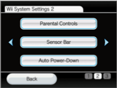
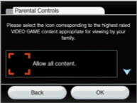
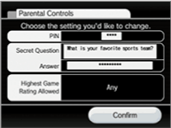
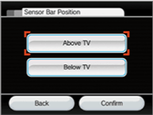
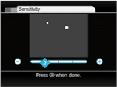

The second set of options in Wii Settings lets you configure Parental Controls, adjust the settings for your Sensor Bar and activate the Auto Power-Down feature.
From the Wii Menu, follow the steps below to get to the Wii System Settings 2.
1 Select  (Wii Options). (Wii Options).
3 Select  once to move to the second set of options. once to move to the second set of options.
Parental Controls
 
The Parental Controls settings offer you a means to manage what content is accessible to the console users. If you apply Parental Controls, you will be prompted to set a 4-digit PIN that will allow you to adjust the Parental Controls settings in the future and also allow you to access content that is restricted by the Parental Controls settings. The default setting is "OFF," which means that the console will allow access to all content unless you change the settings. The console can only have one configuration for Parental Controls. If you want to restrict content for multiple users, you should configure the system with settings to match the restrictions for the youngest user and share the PIN only with those allowed to view restricted content.
To customise the settings, select from the Wii Menu, select Wii SETTINGS, then go to the second set of options and select PARENTAL CONTROLS. By applying Parental Controls settings you can restrict access to Wii software and related content according to different age rating systems, such as the Pan European Game Information (PEGI) system or the Classification Operations Branch (Australia) and OFLC (New Zealand) (→).
 |
|
 |
 |
Parental Controls Precautions
If Parental Controls are applied and a user attempts to play content that exceeds the Parental Controls setting, the user will be prompted to enter the Parental Controls PIN to temporarily disable the Parental Controls. The PIN will be necessary each time a user tries to access restricted content. If your settings only apply to certain members of your household, share the Parental Controls PIN with users who may have unrestricted use of the system.
You will be prompted to select and answer a secret question that will allow you to retrieve a forgotten Parental Controls PIN. If you forget your PIN, please follow the prompts on-screen to answer your secret question. If you are unable to retrieve your PIN by answering your secret question, please call Nintendo Customer Support.
| |
 |
|
|
Sensor Bar
When positioning the Sensor Bar, you may need to adjust two key settings. Select SENSOR BAR POSITION or SENSITIVITY, then proceed with the following instructions.
Sensor Bar Position

You'll want to adjust this setting to match where you've placed your Wii mini console's Sensor Bar: ABOVE TV or BELOW TV screen. Confirm your selection once it's complete.
Sensitivity
Use this feature to adjust the sensitivity of the pointer function of the Wii Remote. If you find that you're not getting an optimal pointing experience with the Wii Remote, you may want to adjust this setting.

After you select SENSITIVITY from the Sensor Bar Settings Screen, you'll see an explanation screen that further details the sensitivity setting. Select OK to begin the adjustment test.
In the test, you'll use the Wii Remote pointer to move a cursor into view within the test field. If you see two blinking dots, your current sensitivity setting is working fine. If you don't see two blinking dots, adjust the sensitivity with  and  until you do, then press  to confirm your new setting.
- The initial recommended distance for using the Wii Remote pointer is 1.0 - 3.0 metres from the Sensor Bar. By increasing the sensitivity setting, you'll increase the distance at which you can use the pointer. Also note that the influence of direct sunlight and various light sources can make the pointer operation less optimal.
Auto Power-Down
The Auto Power-Down feature powers down the console if there has been no user interaction with the console for one hour.
This feature is enabled by default.
|